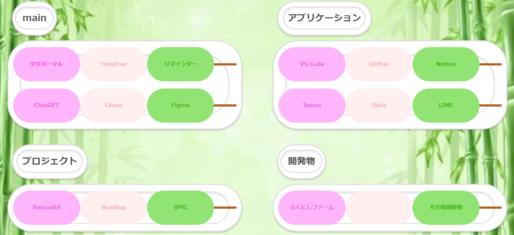

- home
- ポータルサイト
ポータルサイト画面

概要
自身が良く利用するWebサイト及びアプリケーションをポータルサイトに集約し起動しやすくしたアプリケーションです。
WebサイトはURLをHTML上で記述することにより実装することができるが、本システムではローカル上のアプリケーションを起動したい。 そのため、Pythonとflaskを用いて簡易的なデプロイサーバーをPC起動時に自動展開するようにexeファイル化している。 実際のコードは自身のパソコンのセキュリティー面から公開できないためprivateとしているが記述方法を以下に示します。
プロジェクトツリー
C:.
├─build
│ └─app
│ └─localpycs
├─dist
├─static
│ ├─css
│ │ └─style.css
│ └─pic
├─templates
│ └─index.html
└─venv
ソースコード例
cssファイルの参照方法
<head><link rel="stylesheet" href="{{url_for('static',filename='css/style.css')}}">
</head>
ローカルアプリを開くためのPythonソースコード
from flask import Flask, render_template, redirect, url_for
import os
app = Flask(__name__)
@app.route('/')
def index():
return render_template('index.html')
def app_open(file):
try:
os.startfile(file)
except Exception as e:
print(f"エラーが発生しました: {str(e)}")
return redirect('../')
@app.route('/htmlに記入するroute名') # 例:@app.route('/app')
def htmlに記入するroute名(): # 例:def app():
# プロジェクトツリーのtemplates内にあるsub.htmlフォルダを参照する場合
return render_template('sub.html')
return app_open("C:\\プログラムディレクトリ\\ms-teams.exe")